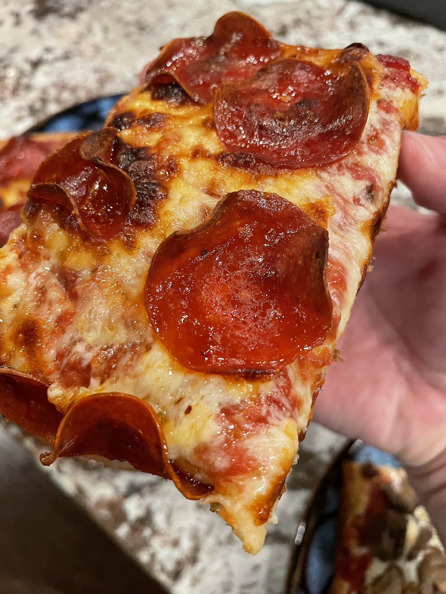
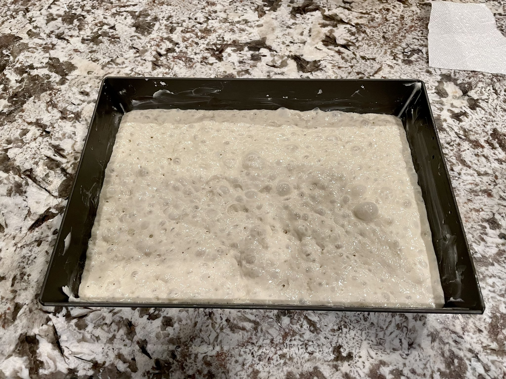
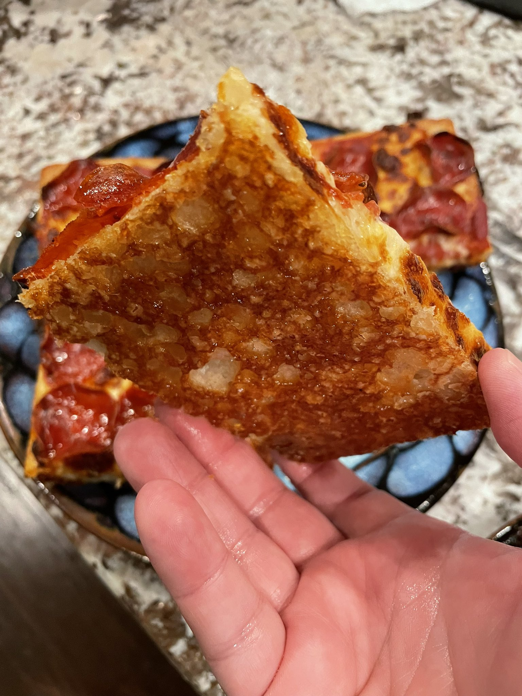

Detroit Style Pizza
Detroit style is a lot like a Sicilian, with a foccacia-like chewy dough and extremely crispy crust which fries in the liberal amount of oil put in the pan for baking.
This recipe is made for this Detroit-style 10x14 pan from LloydPan but should scale easily to other sizes if you adjust the water and flour. The important thing is that the pan needs to be totally flat, so that the crust fries evenly.
Ingredients: Dough
- 260g water
- 325g bread flour
- 1 tsp diastatic malt powder (optional, adds a little "chew" to the crust)
- 1 tsp salt
- 1 tsp sugar
- 1 tsp active or instant dry yeast
- 2 oz corn (or vegetable) oil for pan
- a few drops butter flavoring for the oil (optional, but strongly recommended 😃)
Ingredients: Sauce and Toppings
- 8 oz can pureed tomato
- 1/2 tsp salt
- 1 tsp granulated garlic
- 1/2 tsp sugar
- 1 tbsp oregano
- 8 oz mozzarella
Directions
Dough
NOTE: I strongly recommend using a mixer. This dough is super wet and doesn't even make much of a real dough "ball" until it has rested.
In a bowl/mixer add the water at 100-110°F, the yeast and the sugar. Allow yeast to bloom for 10 minutes. Then add the salt and flour and mix for 5 minutes. (10 minutes or so if hand kneading)
Let your dough rest 15-20 minutes.
Pan Prep
While the dough is resting grab your Detroit style pizza pan and to it add the corn oil and butter flavoring and make sure they’re well mixed. I also recommend using some shortening on the sides of the pan so the crust pulls away cleanly during baking, and it will help keep the tomato sauce from creating a patina.
Lightly oil a work surface and push the dough out flat and form a sort of rectangle, pick the dough up and slap it back and forth between your hands to stretch it. If you don't feel comfortable doing this just stretch it out best you can on your work surface. Place the dough into your pan and starting with one end push the edges into the corners and turn the pan around and do the same with the other side. Using your fingertips press down hard up one side then up the other over the area of the pan.
Then, cover the pan with a towel and allow to sit out for 4-5 hours at 70-80° or until the dough has risen about half way up the pan. Now you can cook it or refrigerate it.
I know 4-5 hours seems like a lot, but you want to wait until it gets lots of air bubbles, like this:
Sauce
Combine pureed tomato, salt, garlic, sugar, and oregano and set aside.
Baking
This is the hardest part to give instructions for, because ovens vary a lot, and some don't even go up to 500 degrees. Not being able to see the crust adds an extra layer of uncertainty when trying to dial in this recipe. You'll just have to experiment and see. This is what works for me.
Preheat oven to 500°F.
Bake crust by itself for 6 minutes.
Take it out of the oven, and add your sauce, cheese, and toppings.
Detroit style typically goes right to the edge with sauce and cheese. If you have a little shredded cheddar around, sprinkle it around the outside edge to get a nice crispy cheesy rim.
Finish baking for another 14 minutes.
If it cooked right, it should look something like this on the underside of the crust:
